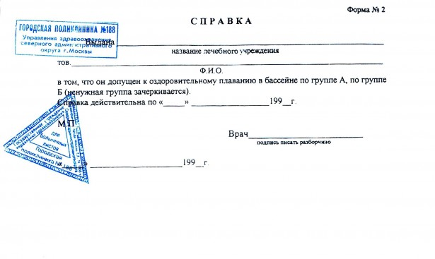

Один из обычаев, которые широко распространены в обществе, но никакой фактической пользы не несут, а создают иллюзию выглядит так. Заболевший студент, школьник или детсадовец, после выздоровления должен принести в учебное заведение медицинскую справку.
Справка вроде как призвана выполнить целый ряд функций.
1. Справка с синей печатью врача как бы намекает преподавателю, что школьник не балду пинал, не пил пиво по подъездам и не завис за плейстешном у друзей на двое суток, а болел. Так принято, но зачем об этом знать преподавателю мне непонятно. Ведь школьника должны оценивать не по количеству часов, а по знаниям показанным на экзамене или в ходе контрольной.
2. В детском саду принесенная справка однозначно свидетельствует о том, что ребёнок не пользовался услугами воспитателей, следовательно при оплате услуг сумма в квитанции будет ниже. В таких случаях, чтобы не тратить время на сидение в очередях из-за простуды я всегда звонил в детсад и просил воспитателей отмечать в ведомости, что мы детсад посещали. Сэкономленная сумма не компенсировала мне потерю времени в очередях.
3. В справке написано что ребенок «соматически здоров». Раньше, кстати, писали «здоров», сейчас добавляют «соматически». То есть физически здоров, а что у тебя в голове не выяснялось. Если ребёнок здоров на момент окончания приёма у врача, то это не значит, что он будет здоров когда завтра пойдет в школу. Смысла диагноза для тех, кто его окружает, таким образом нет никакого. Обязательный еженедельный медосмотр, думаю дал бы больше пользы, но хорошо, что до него никто не додумается.
Единственной полезной функцией справки от врача в учебное заведение являются разве что рекомендации по физической нагрузке или питанию. Но в этом случае это действительно должны быть рекомендации конкретному человек, а не шаблонные «от занятий физической культурой на 14 дней…»

Болеть, на мой взгляд нужно так. Заболел, если необходимо — вызвал врача, если во враче необходимости нет — сходил в аптеку. Как ты будешь компенсировать пропуски занятий — твои проблемы (звони одноклассникам, занимайся дома сам или просто надейся на удачу). После того как выздоровел, можно как ни в чем ни бывало идти на занятия.